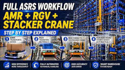

Complete ASRS Workflow Case Study | AMR + RGV + Stacker Crane Integrated Warehouse Automation System

Summary
Modern manufacturing and logistics operations require more than automated storage—they require a fully integrated intralogistics workflow that seamlessly connects production, transportation, buffering, storage, and outbound fulfillment.
This project showcases a complete Automated Storage and Retrieval System (ASRS) integrating AMR (Autonomous Mobile Robots), RGV (Rail Guided Vehicles), and Stacker Crane technology into one intelligent warehouse automation solution.
The system automatically transports finished products from production lines, transfers materials between warehouse zones, and performs high-density automated storage and retrieval without manual intervention.
Designed for manufacturers, e-commerce fulfillment centers, third-party logistics providers, and high-throughput distribution facilities, this integrated ASRS solution significantly improves warehouse efficiency, inventory accuracy, labor productivity, and operational scalability while supporting continuous 24/7 production.
Technology
- This project combines multiple intelligent warehouse technologies into one coordinated automation platform.
- Intelligent Transportation：
- ① Autonomous Mobile Robot (AMR)
- ② Rail Guided Vehicle (RGV)
- ③ Automatic Conveyor Transfer System
- Automated Storage：
- ① High-rise Stacker Crane ASRS
- ② Intelligent Storage Allocation
- ③ High-Density Rack System
- Software Platform：
- ① Warehouse Management System (WMS)
- ② Warehouse Control System (WCS)
- ③ SCADA Visualization Platform
- ④ Intelligent Task Scheduling System
- Smart Warehouse Features：
- ① Automatic Material Tracking
- ② Dynamic Task Allocation
- ③ Real-Time Inventory Management
- ④ Barcode & RFID Traceability
- ⑤ Automatic Exception Handling
Challenge
Many modern factories have already automated production, yet warehouse operations often remain disconnected from manufacturing processes.
Typical challenges include:
① Manual transportation between production and warehouse
② Forklift congestion causing transportation delays
③ Inconsistent material flow between production, storage, and shipping
④ Low warehouse throughput during peak production
⑤ High labor costs caused by repetitive transport tasks
⑥ Inventory inaccuracies due to manual handling
⑦ Difficulty scaling warehouse operations as production grows
Without an integrated logistics workflow, even advanced production lines experience bottlenecks that reduce overall factory efficiency.
Solution
To solve these challenges, an integrated warehouse automation architecture was developed by combining AMR, RGV, and stacker crane technologies into a single intelligent system.
The automation strategy assigns specialized roles to each subsystem:
① AMR robots transport finished goods from production lines.
② RGV systems perform high-speed horizontal transfers and buffer management.
③ Stacker cranes automatically store and retrieve inventory.
④ WMS and WCS coordinate all equipment through intelligent scheduling.
Instead of operating independently, every subsystem works as part of one synchronized warehouse ecosystem, ensuring uninterrupted material flow from production to storage and outbound logistics.
Workflow & Layout
Step ① Production Output：
Finished products leave the production line and are automatically identified through barcode or RFID scanning.
The Warehouse Management System immediately records product information and generates storage instructions.
Step ② AMR Transportation：
Autonomous Mobile Robots receive transport tasks automatically.
AMRs navigate dynamically without fixed tracks, safely transporting pallets, cartons, or containers from production areas to warehouse buffer zones.
Advantages include:
① Flexible route planning
② Collision avoidance
③ Automatic charging
④ Continuous operation
Step ③ RGV Buffer Transfer：
After arriving at the buffer zone, Rail Guided Vehicles take over.
The RGV system performs rapid horizontal transportation between different warehouse sections while balancing storage and retrieval traffic.
Its responsibilities include:
① Material buffering
② Zone transfer
③ High-speed shuttle movement
④ Traffic balancing
Step ④ Automated Storage：
The stacker crane receives storage commands from WCS.
Using intelligent location allocation algorithms, the crane automatically lifts and places products into assigned storage positions within the high-density rack system.
Storage allocation considers:
① Product category
② Inventory turnover
③ Available locations
④ Future retrieval efficiency
Step ⑤ Inventory Management：
Every storage transaction is synchronized with WMS in real time.
Inventory information includes:
① Exact storage location
② Quantity
③ Batch number
④ Production information
⑤ Traceability records
Step ⑥ Automated Retrieval：
When outbound orders are generated, WMS schedules retrieval operations automatically.
The stacker crane retrieves products, RGV transports them to transfer stations, and AMRs deliver them to shipping or production areas as required.
Step ⑦ Outbound Logistics：
Products move automatically toward packaging, shipping, or production replenishment without manual intervention.
The entire workflow operates continuously with synchronized scheduling across all automation equipment.
Results & ROI
- The integrated automation system delivered significant operational improvements.
- ① Material Handling Efficiency：
- Continuous automated transportation eliminated manual transport interruptions and reduced internal logistics delays.
- ② Higher Warehouse Throughput：
- Parallel operation of AMRs
- RGVs
- and stacker cranes significantly increased overall warehouse capacity without increasing labor.
- ③ Labor Cost Reduction：
- Manual forklift operations were greatly reduced
- allowing warehouse personnel to focus on supervision and exception management.
- ④ Inventory Accuracy：
- Automated identification and real-time inventory synchronization improved inventory visibility and minimized human errors.
- ⑤ Operational Stability：
- The intelligent scheduling system balanced workloads across all equipment
- ensuring reliable 24/7 warehouse operation.
- ⑥ Scalability：
- The modular architecture enables future expansion by adding:
- ① Additional AMRs
- ② Additional stacker cranes
- ③ More RGV tracks
- ④ Expanded storage racks
- without redesigning the entire warehouse.
Equipment List
- Intelligent Transportation：
- ① Autonomous Mobile Robots (AMR)
- ② Rail Guided Vehicle (RGV)
- ③ Roller Conveyor System
- ④ Transfer Stations
- Storage Equipment：
- ① High-Rise Storage Rack
- ② Stacker Crane ASRS
- ③ Storage Buffer System
- Software：
- ① Warehouse Management System (WMS)
- ② Warehouse Control System (WCS)
- ③ SCADA Monitoring Platform
- ④ Intelligent Scheduling Software
- Safety Systems：
- ① Laser Navigation
- ② Obstacle Detection
- ③ Emergency Stop System
- ④ Safety PLC
- ⑤ Fire Protection Integration
Project Overview / Opening
Warehouse automation is no longer about installing a single robot or storage system.
The highest-performing facilities integrate transportation, storage, and software into one coordinated logistics platform.
This project demonstrates how AMR robots, RGV systems, and stacker cranes work together under unified WMS and WCS control to create a fully automated warehouse capable of supporting modern manufacturing and high-volume logistics operations.
The result is an intelligent warehouse that delivers continuous material flow, high storage density, reduced labor dependency, and exceptional operational efficiency.
Key Points
- 1、Fully Integrated Automation Architecture
- Instead of isolated automation equipment, this project combines transportation, storage, and software into one intelligent warehouse ecosystem.
- 2、Role-Based Automation
- Each automation technology performs the task it does best:
- • AMR — Flexible transportation
- • RGV — High-speed zone transfer
- • Stacker Crane — High-density storage and retrieval
- 3、Intelligent Software Coordination
- WMS, WCS, and SCADA coordinate every movement in real time, ensuring synchronized warehouse operations.
- 4、High Scalability
- The modular system allows future expansion without interrupting ongoing operations.
- 5、Suitable for Multiple Industries
- This solution is ideal for:
- ① Manufacturing
- ② Automotive
- ③ Electronics
- ④ Pharmaceutical
- ⑤ Food & Beverage
- ⑥ E-commerce Fulfillment
- ⑦ Third-Party Logistics
Implementation / Workflow
Phase ① Warehouse Analysis
Current logistics processes, SKU characteristics, production rhythm, and throughput requirements were evaluated.
Phase ② System Engineering
Engineers designed warehouse layout, transportation routes, storage capacity, and equipment allocation.
Phase ③ Software Integration
WMS, WCS, ERP, and production systems were integrated into one unified automation platform.
Phase ④ Equipment Installation
AMRs, RGV systems, stacker cranes, conveyors, and storage racks were installed and commissioned.
Phase ⑤ System Optimization
Operational data was analyzed to optimize robot scheduling, storage allocation, and transportation efficiency for maximum throughput.
Customer Value / Results
Customers receive measurable business benefits across multiple dimensions.
Operational Benefits：
① Faster warehouse throughput
② Continuous material flow
③ Reduced logistics bottlenecks
④ Higher storage density
⑤ Improved inventory visibility
Financial Benefits：
① Lower labor costs
② Reduced forklift fleet investment
③ Lower operating expenses
④ Faster project ROI
Strategic Benefits：
① Scalable warehouse architecture
② Smart factory integration
③ Future-ready digital logistics platform
④ Enhanced competitiveness through automation
Conclusion / Next Step
A modern warehouse achieves maximum performance when every stage of material handling operates as one coordinated system.
By integrating AMR robots, RGV transportation, stacker crane ASRS, WMS, and WCS, this project creates a seamless end-to-end warehouse workflow that eliminates manual handling, improves throughput, and enables intelligent inventory management.
Whether supporting manufacturing, e-commerce fulfillment, or industrial distribution, this integrated ASRS solution provides a scalable foundation for long-term operational excellence.
Planning a fully automated warehouse project? Our engineering team can help you analyze warehouse workflows, design the optimal AMR + RGV + ASRS architecture, estimate project costs and ROI, and deliver a complete turnkey warehouse automation solution tailored to your operational goals.
SEO Title
Complete ASRS Workflow Case Study | AMR + RGV + Stacker Crane Integrated Warehouse Automation System
SEO Description
Modern manufacturing and logistics operations require more than automated storage—they require a fully integrated intralogistics workflow that seamlessly connects production, transportation, buffering, storage, and outbound fulfillment.
This project showcases a complete Automated Storage and Retrieval System (ASRS) integrating AMR (Autonomous Mobile Robots), RGV (Rail Guided Vehicles), and Stacker Crane technology into one intelligent warehouse automation solution.
The system automatically transports finished products from production lines, transfers materials between warehouse zones, and performs high-density automated storage and retrieval without manual intervention.
Designed for manufacturers, e-commerce fulfillment centers, third-party logistics providers, and high-throughput distribution facilities, this integrated ASRS solution significantly improves warehouse efficiency, inventory accuracy, labor productivity, and operational scalability while supporting continuous 24/7 production.
Related Blog
Start with Your Business Challenge
Tell us about your warehouse, factory, or production requirements. We'll help you explore practical automation solutions and relevant project references.